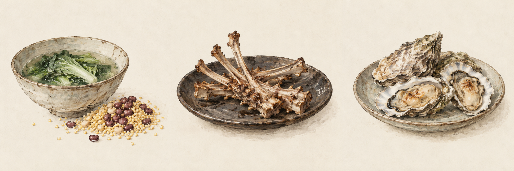

可以观察的证据
传世正文没有明确的收信人称谓与落款；“每戒过子慎勿说”以叙述口吻提到苏过。明拓本说明后世书迹的收藏与传播，不能单凭拓本形态确定最初文体。
苏轼尺牍 · 数字展览
问汝平生功业，黄州惠州儋州。
——《自题金山画像》（题名亦作《题金山自画像》）
不能决定去往何处，仍要经营一日三餐。
循着两封尺牍与一篇饮食文字，读懂困顿中的生活。
壹 · 入席之前
为三个贬所各选一种食物，再揭开答案。

贰 · 山河渐远
点击地图上的地名，直达下方展厅。手机上可左右滑动查看全图。
今绘古风地理示意，非宋代原图。海岸、河流与定位为概略表达，不作精确测绘依据；年份为抵达年份。
陆 · 文体考辨
《食蚝》又称《献蚝帖》。书迹的流传形态与文字的最初文体，需要分别判断。
传世正文没有明确的收信人称谓与落款；“每戒过子慎勿说”以叙述口吻提到苏过。明拓本说明后世书迹的收藏与传播，不能单凭拓本形态确定最初文体。
保留“书信”说与材料提出的质疑，不以缺少称谓直接否定尺牍身份。本展将《食蚝》作为补充饮食文献，避免武断地称为“第三封书信”。
原讲稿所述《佚文汇编》卷六编录信息，尚需以点校本书影核实；不作为已完成的版本校勘结论。
柒 · 尾厅
接受生活 → 改造生活 → 发现生活
食物越来越有滋味，并不意味着处境越来越好。
在无法选择的境遇里，苏轼依然寻找可以经营的生活。
好好吃饭，好好写信，好好过日子。回到卷首 ↑
捌 · 文献来源
原文据以上材料转录；今译与导读为展示节译及策展整理。抵达年份与写作年份分别标示，不将1080、1094、1097直接当作三篇的写作时间。
保留材料用字“馀”“燋”等，不以现代常用字静默替换。原材料中的网页链接不列入古文正文。“海蛮”为原文历史用语，今译作“当地人”。不采用仅凭现代种植分布推定苏轼所食黍种的说法。
水墨山水为AI生成的当代装饰插画，并非宋画或历史实物；未使用生成书法替代古文史料。